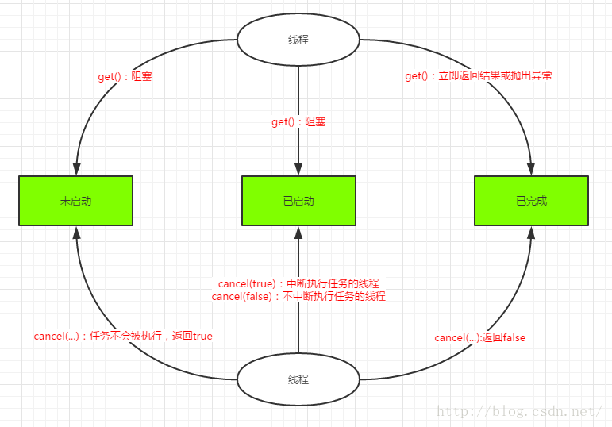

Java多线程基础
进程，线程，多线程
- 进程是资源分配的最小单位，有自己独立的地址空间，一个进程可以创建多个线程。
- 线程是程序执行和CPU调度的最小单位，线程共享本进程的地址空间，分为用户级线程和内核级线程。
- 一个进程如果只有一个线程，称为单线程程序；如果有多个线程，称为多线程程序。
多线程的创建与启动
创建多线程有两种方法，一种是继承Thread类重写run方法，另一种是实现Runnable接口重写run方法。
继承Thread类重写run方法：
1
2
3
4
5
6
7
8
9public class ThreadByEx extends Thread{
/**
* 重写run方法
*/
public void run() {
System.out.println("I'm a thread that extends Thread!");
}
}实现Runnable接口重写run方法
1
2
3
4
5
6
7
8
9public class ThreadByRunnable implements Runnable{
/**
* 实现run方法
*/
public void run() {
System.out.println("I'm a thread that implements Runnable !");
}
}启动线程
1
2
3
4
5
6
7
8
9
10
11
12public class Main {
public static void main(String[] args) {
//继承Thread启动的方法
ThreadByEx t1=new ThreadByEx();
t1.start();//启动线程
//实现Runnable启动线程的方法
ThreadByRunnable r = new ThreadByRunnable();
Thread t2 =new Thread(r);
t2.start();//启动线程
}
}调用
start()方法后并不是是立即的执行多线程的代码，而是使该线程变为可运行态，什么时候运行多线程代码是由操作系统决定的。
中断线程
线程的 thread.interrupt() 方法向线程发送中断请求，将会设置该线程的中断状态位，即设置为 true，中断的结果线程是死亡、还是等待新的任务或是继续运行至下一步，就取决于这个程序本身。线程会不时地检测这个中断标示位，以判断线程是否应该被中断（中断标示值是否为 true）。它并不像 stop 方法那样会中断一个正在运行的线程。(在 Java 早期版本中有一个 stop 方法，其他线程可以调用它终止线程，但是这个方法现在已经被弃用了，因为会造成一些线程不安全的问题)
判断线程是否被中断：
1 | while(!Thread.currentThread().isInterrupted() && more work to do){ |
如果一个线程处于阻塞状态，即线程在检查中断标示时发现中断标示为 true，则会在阻塞方法（sleep、join、wait、1.5 中的 condition.await 及可中断的通道上的 I/O 操作方法）调用处抛出InterruptedException 异常，并且在抛出异常后立即将线程的中断标示位清除，即重新设置为false。
中断一个线程只是为了引起该线程的注意，被中断线程可以决定如何应对中断。某些线程非常重要，以至于它们应该不理会中断，而是在处理完抛出的异常之后继续执行。但是更普遍的情况是，一个线程将把中断看作一个终止请求，这种线程的 run() 方法遵循如下形式：
1 | public void run() { |
如果 try 在 while 循环里时，应该在 catch 块里重新设置一下中断标示，因为抛出 InterruptedException 异常后，中断标示位会自动清除，此时应该这样：
1 | public void run() { |
底层中断异常的处理，最好是这样的：
1 | void mySubTask() throws InterruptedException { |
使用 Thread.interrupt() 中断非阻塞状态线程
1 | class Example1 extends Thread { |
输出
1 | Starting thread... |
使用信号量中断非阻塞状态的线程
1 | class Example2 extends Thread { |
使用 thread.interrupt() 中断阻塞状态线程
Thread.interrupt() 的作用不是中断线程，而是「通知线程应该中断了」，具体到底中断还是继续运行，应该由被通知的线程自己处理。
具体来说，当对一个线程，调用 interrupt() 时，
- 如果线程处于被阻塞状态（例如处于 sleep, wait, join 等状态），那么线程将立即退出被阻塞状态，并抛出一个 InterruptedException 异常。
- 如果线程处于正常活动状态，那么会将该线程的中断标志设置为 true，仅此而已。被设置中断标志的线程将继续正常运行，不受影响。
1 | class Example3 extends Thread { |
interrupt() 方法是不能中断死锁线程的，因为锁定的位置根本无法抛出异常。
中断I/O操作
尽管 interrupt() 被调用，线程也不会退出被阻塞状态，比如 ServerSocket的 accept 方法根本不抛出异常。所以需要调用阻塞该线程的套接字的 close() 方法，如果线程被 I/O 操作阻塞，当调用该套接字的 close 方法时，该线程在调用 accept 地方法将接收到一个SocketException (IOException 的子异常）异常。
1 | class Example4 extends Thread { |
守护线程
守护线程的唯一作用是为其他线程提供服务。计时线程就是一个典型的例子，它定时地发送“计时器滴答”信号告诉其他线程去执行某项任务。当只剩下守护线程时，虚拟机就退出了。另外 JVM 的垃圾回收、内存管理等线程都是守护线程。
1 | package com.zejian.test; |
在 Java 虚拟机退出时 Daemon线程中的 finally 代码块并不一定会执行，因此在构建 Daemon 线程时，不能依靠 finally 代码块中的内容来确保执行关闭或清理资源的逻辑。
线程优先级
在 Java 线程中，通过一个整型的成员变量 Priority 来控制线程优先级 ，每一个线程有一个优先级，默认情况下，一个线程继承它父类的优先级。可以用 setPriority 方法提高或降低任何一个线程优先级。可以将优先级设置在 MIN_PRIORITY（在 Thread 类定义为 1）与 MAX_PRIORITY（在 Thread 类定义为 10）之间的任何值。线程的默认优先级为 NORM_PRIORITY（在 Thread 类定义为 5）。
具有较高优先级的线程对程序更重要，并且应该在低优先级的线程之前分配处理器资源。但是，线程优先级不能保证线程执行的顺序。
线程的转换关系
新建状态
使用 new 关键字和 Thread 类或其子类建立一个线程对象后，该线程对象就处于新建状态。它保持这个状态直到程序 start() 这个线程。
就绪状态
当线程对象调用了 start() 方法之后，该线程就进入就绪状态。就绪状态的线程处于就绪队列中，要等待 JVM 里线程调度器的调度。
运行状态
如果就绪状态的线程获取 CPU 资源，就可以执行 run()，此时线程便处于运行状态。处于运行状态的线程最为复杂，它可以变为阻塞状态、就绪状态和死亡状态。
阻塞状态
如果一个线程执行了 sleep（睡眠）、suspend（挂起）等方法，失去所占用资源之后，该线程就从运行状态进入阻塞状态。在睡眠时间已到或获得设备资源后可以重新进入就绪状态。可以分为三种：
- 等待阻塞：运行状态中的线程执行 wait() 方法，使线程进入到等待阻塞状态。
- 同步阻塞：线程在获取 synchronized 同步锁失败(因为同步锁被其他线程占用)。
- 其他阻塞：通过调用线程的 sleep() 或 join() 发出了 I/O 请求时，线程就会进入到阻塞状态。当sleep() 状态超时，join() 等待线程终止或超时，或者 I/O 处理完毕，线程重新转入就绪状态。
死亡状态
一个运行状态的线程完成任务或者其他终止条件发生时，该线程就切换到终止状态。
图中的方法解析：
- Thread.sleep(long)：使当前线程进入阻塞状态，在指定时间内不会执行。
- Object.wait()：调用该方法的线程进入WAITING状态，只有等待另外线程的通知或被中断才会返回，需要注意，调用wait()方法后，会释放对象的锁。
- Object.notifyAll()：从对象等待池中唤醒所有等待线程。
- Object.notify()：通知一个在对象上等待的线程，使其从wait()返回，而返回的前提是该线程获取到了对象的锁。wait() 和 notify() 必须在 synchronized 函数或 synchronized 中进行调用。
- Thread.yield()： 暂停当前正在执行的线程对象。
- Thread.Join()：把指定的线程加入到当前线程，可以将两个交替执行的线程合并为顺序执行的线程。比如在线程B中调用了线程A的Join()方法，直到线程A执行完毕后，才会继续执行线程B。
通过 wait()/notify() 实现等待/通知机制的示例代码：
1 | public class WaitNotifyTest { |
运行结果：
1 | 线程A等待获取lock锁 |
Callable、Future和FutureTask
创建线程的方式有两种，一种是实现 Runnable 接口，另一种是继承 Thread，但是这两种方式都有个缺点，那就是在任务执行完成之后无法获取返回结果。从 JAVA SE 5.0 开始引入 Callable 和 Future，通过它们构建的线程，在任务执行完成后就可以获取执行结果。
线程创建的第三种方式就是实现 Callable 接口。
Callable接口
定义如下：
1 | public interface Callable<V> { |
该接口声明了一个 call() 方法，这个方法有返回值 V，也可以抛出异常。
无论是 Runnable 接口的实现类还是 Callable 接口的实现类，都可以被 ThreadPoolExecutor 或 ScheduledThreadPoolExecutor 执行，ThreadPoolExecutor 或 ScheduledThreadPoolExecutor 都实现了 ExcutorService 接口，因此 Callable 需要和 Executor 框架中的 ExcutorService 结合使用。
ExecutorService 提供的方法：
1 | //提交一个实现Callable接口的任务，并且返回封装了异步计算结果的Future |
除了自己实现 Callable 对象外，还可以使用工厂类 Executors 把一个 Runnable 对象包装成 Callable 对象。
1 | public static Callable<Object> callable(Runnable task) |
Future接口
Future
Future 接口的源码：
1 | public interface Future<V> { |
方法解析
- V get() ：获取异步执行的结果，如果没有结果可用，此方法会阻塞直到异步计算完成。
- V get(Long timeout , TimeUnit unit) ：同上，但是有时间限制，如果阻塞时间超过设定的 timeout 时间，该方法将抛出异常。
- boolean isDone() ：如果任务执行结束，无论是正常结束或中途取消还是发生异常，都返回 true。
- boolean isCanceller() ：如果任务完成前被取消，则返回 true。
- boolean cancel(boolean mayInterruptRunning) ：如果任务还没开始，执行 cancel(…) 方法将返回 false；如果任务已经启动，执行 cancel(true) 方法将以中断执行此任务线程的方式来试图停止任务，如果停止成功，返回 true；当任务已经启动，执行 cancel(false) 方法将不会对正在执行的任务线程产生影响(让线程正常执行到完成)，此时返回 false；当任务已经完成，执行cancel(…)方法将返回 false。
FutureTask类
Future 只是一个接口，无法直接创建对象，因此需要其实现类 FutureTask。
FutureTask 的实现：
1 | public class FutureTask<V> implements RunnableFuture<V> { |
FutureTask 类实现了 RunnableFuture 接口，那么 RunnableFuture 接口的实现如下：
1 | public interface RunnableFuture<V> extends Runnable, Future<V> { |
FutureTask 的两种构造函数：
1 | public FutureTask(Callable<V> callable) { |
FutureTask 可以直接提交给 Executor 执行，也可以调用线程直接执行 FutureTask.run()。
FutureTask 的方法执行示意图：

当 FutureTask 处于未启动或已启动状态时，如果此时执行 FutureTask.get() 方法将导致调用线程阻塞；当 FutureTask 处于已完成状态时，执行 FutureTask.get() 方法将导致调用线程立即返回结果或者抛出异常。
应用案例
使用 Callable+Future 获取执行结果
Callable 实现类如下：
1
2
3
4
5
6
7
8
9
10
11
12
13
14
15import java.util.concurrent.Callable;
public class my implements Callable<Integer> {
private int sum;
public Integer call() throws Exception {
System.out.println("Callable线程开始计算");
Thread.sleep(2000);
for(int i=0 ;i<5000;i++){
sum=sum+i;
}
System.out.println("Callable线程计算结束");
return sum;
}
}submit 提交 Callable 任务，调用的是 execute(Runnable command) 方法，execute 执行 FutureTask 对象中的 run 方法，在 run 方法中调用 callable 中的 call 方法。总结一下，首先创建一个实现 Future 和 Runnable 的 FutureTask 对象并且把 Callable 对象通过构造函数注入到对象中，然后把 FutureTask 对象传入 execute 方法中，之后直接返回FutureTask对象。execute 方法执行完会把执行结果放入 FutureTask 对象，我们从对象中获得返回值。
Callable 执行测试类：
1
2
3
4
5
6
7
8
9
10
11
12
13
14
15
16
17
18
19
20
21
22
23
24
25
26
27
28
29
30import java.util.concurrent.ExecutorService;
import java.util.concurrent.Executors;
import java.util.concurrent.Future;
public class CallableTest {
public static void main(String[] args) {
//创建线程池
ExecutorService es = Executors.newSingleThreadExecutor();
//创建Callable对象任务
my calTask=new my();
//提交任务并获取执行结果
Future<Integer> future =es.submit(calTask);
//关闭线程池
es.shutdown();
try {
Thread.sleep(2000);
System.out.println("主线程在执行其他任务");
if(future.get()!=null){
//输出获取到的结果
System.out.println("future.get()-->"+future.get());
}else{
//输出获取到的结果
System.out.println("future.get()未获取到结果");
}
} catch (Exception e) {
e.printStackTrace();
}
System.out.println("主线程执行完成");
}
}运行结果：
1
2
3
4
5Callable线程开始计算
主线程在执行其他任务
Callable线程计算结束
futureTask.get()-->12497500
主线程执行完成使用 Callable+FutureTask 获取执行结果
1
2
3
4
5
6
7
8
9
10
11
12
13
14
15
16
17
18
19
20
21
22
23
24
25
26
27
28
29
30
31
32
33
34
35import java.util.concurrent.ExecutorService;
import java.util.concurrent.Executors;
import java.util.concurrent.Future;
import java.util.concurrent.FutureTask;
public class CallableTest {
public static void main(String[] args) {
//创建线程池
ExecutorService es = Executors.newSingleThreadExecutor();
//创建Callable对象任务
my calTask=new my();
//创建FutureTask
FutureTask<Integer> futureTask = new FutureTask<>(calTask);
//执行任务
es.submit(futureTask);
//关闭线程池
es.shutdown();
try {
Thread.sleep(2000);
System.out.println("主线程在执行其他任务");
if(futureTask.get()!=null){
//输出获取到的结果
System.out.println("futureTask.get()-->"+futureTask.get());
}else{
//输出获取到的结果
System.out.println("futureTask.get()未获取到结果");
}
} catch (Exception e) {
e.printStackTrace();
}
System.out.println("主线程执行完成");
}
}运行结果同上。